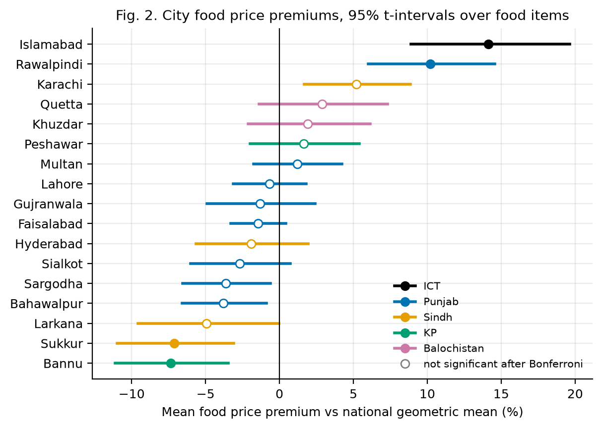
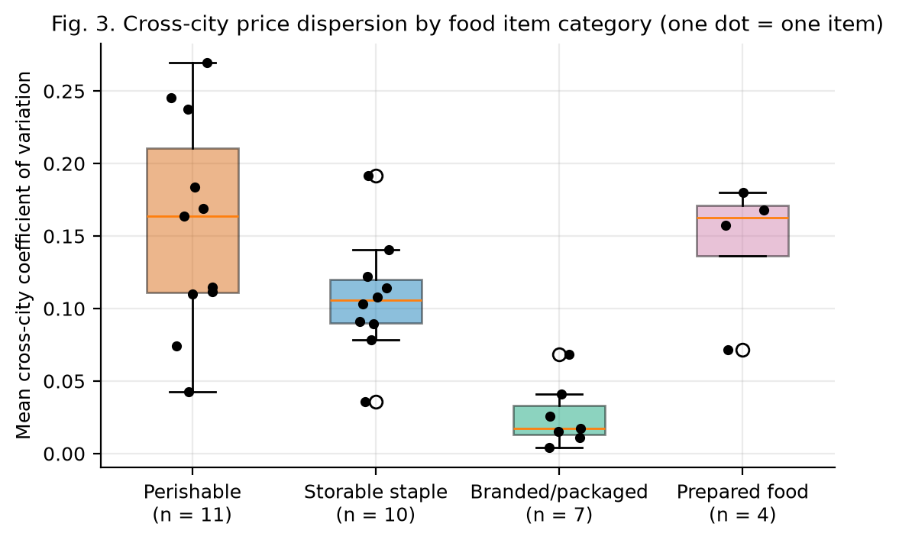
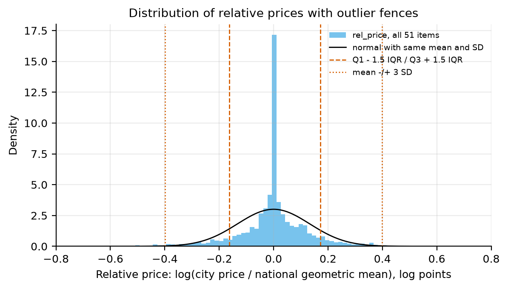
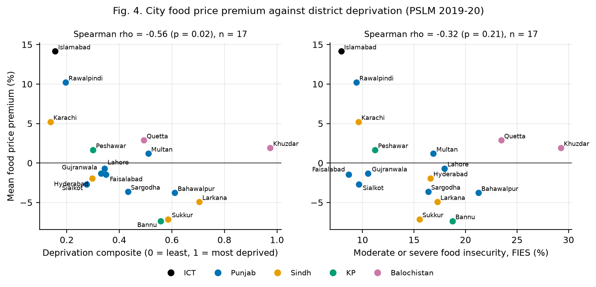
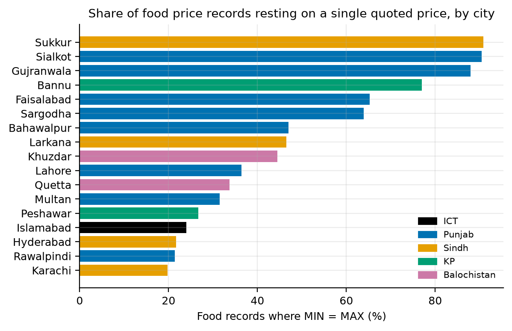

Team. Both members are computer scientists. One owns acquisition, parsing and provenance; the other owns statistical framing, representation, ethics and policy interpretation. Research question. Beneath the single national weekly SPI figure, do persistent city-level food price differences exist, are the cities paying most the ones least able to absorb it, and is the published city detail enough to detect localised price stress? SDGs: primary SDG 2 (Target 2.1, access to food; Target 2.c, functioning food markets and market information); secondary SDG 10 (reduced inequalities).
Changes since Milestone 01. The 7-city panel reported in Milestone 01 was a parsing error: Appendix-A stacks three tables in one sheet, and the old script read only the first. The panel covers all 17 SPI cities (8 Punjab, 4 Sindh, 2 KP, 2 Balochistan, plus Islamabad). A correction note is in the repository. Following the instructor's feedback, three external sources are now merged.
Table 1. Master dataset: 23,409 rows × 46 columns. Observational unit: 1 row = 1 item's retail price in 1 city in 1 week (17 cities × 51 items × 27 weeks; 32 of the 51 items are food).
| Source | Role | Coverage | Access |
|---|---|---|---|
| PBS weekly SPI Annexure, Appendix-A | City-item prices (MIN/AVG/MAX): the panel | 27 weeks, 2025-05-15 to 2026-09-24 | xlsx from pbs.gov.pk release pages |
| PSLM District Level Survey 2019-20 | District deprivation: FIES food insecurity, literacy, schooling, water | 2019-20 | PDF report tables (text extraction) |
| Digital Census 2023, Table 1 | Total and urban population | 2023 | xlsx, one file per province |
| CPI (Urban), food and non-alcoholic beverages | Deflator only, not a regressor | monthly, 2025-05 to 2026-09 | PDF and Monthly Review docx |
Each PBS weekly release page (/weekly-sensitive-price-indicator-spi-for-the-week-ended-on-DD-MM-YYYY/) links an Annexure workbook.
A rate-limited script tried the Thursday, Wednesday and Friday page for each of 73 weeks from
2025-05-15 and logged every request, URL and SHA-256 hash. It found release pages for 12 weeks, most of them weeks already retrieved for Milestone 01 (the
re-downloads were byte-identical). After dropping 12 duplicate files, the panel holds 27 weeks. Other weeks may exist under URLs we did not try, so we do not treat the archive as complete. The week after our freeze date
(2026-10-01) was stored, unopened, as a holdout. External files were downloaded from pbs.gov.pk and are kept unchanged with
their URLs and hashes.
Validation. The parser asserts, for every week: 3 blocks, 17 cities, 51 items, 867 rows; no duplicate key; MIN ≤ AVG ≤ MAX; and zeros only as all-zero triples. Against PBS's own national columns, the cross-city minimum and maximum match PBS's national MIN and MAX in 1,377 of 1,377 item-weeks. The geometric mean of the city averages matches PBS's national average within 0.1% in 1,377 of 1,377. The arithmetic mean misses by a median of 0.42%. We therefore use the geometric mean as the reference price.
The raw sheet (179 rows × 25 columns) is not tidy. City names are column headers, each spanning MIN/AVG/MAX
cells, and three tables are stacked in one sheet. We melt each block into one row per city × item, concatenate the blocks and weeks,
and move PBS's national columns into a separate validation table. We then join the item classification (on item_id), the
city attributes (on city) and the CPI (on the month of week_end). Every join is many-to-one, and the row count is
asserted unchanged (Table 2).
Key alignment decisions.
Table 2. Reshaping and merge steps with keys, cardinality and the asserted row count.
| operation | source | key | cardinality | rows_after |
|---|---|---|---|---|
| stack | 3 Appendix-A blocks per workbook | same 51 item rows | rows: 7+7+3 cities x 51 = 867 per week | 867 |
| stack | 27 weekly workbooks | week_end | 867 x 27 | 23409 |
| merge | item_mapping.csv | item_id | many-to-one (51 items) | 23409 |
| merge | city table (Census 2023 + PSLM 2019-20) | city | many-to-one (17 cities) | 23409 |
| merge | urban food CPI | calendar month of week_end | many-to-one (months) | 23409 |
Nothing is deleted. Zero MIN/AVG/MAX triples (83 rows, 0.35%) are set to missing and flagged: rice IRRI-6/9 is never quoted in Gujranwala, Lahore or Sialkot, and Khuzdar has no gas quote in two weeks. PBS itself excludes these cities from its national mean. Missing counts and percentages for every column are in Appendix Table A1. Most of the missingness is structural: weekly change columns are undefined across non-consecutive weeks (44.3% of rows), because only 15 pairs of weeks are 6-8 days apart. Table 3 gives the choice made for each kind of missingness. Selection bias: we exclude structural non-quotes from price comparisons, so results describe quoting markets and may still reflect selection bias, because a missing quote does not prove an item is unavailable in that city. The gaps in weekly coverage also mean the volatility analysis sees only the weeks we could retrieve.
Table 3. Kinds of missingness, the choice made for each, and why.
| kind | rows | choice | reason |
|---|---|---|---|
| Structural non-quote (PBS printed 0/0/0) | 83 | set to missing, flag, do not impute | Imputing invents a market price PBS does not record; PBS itself excludes these cities from its national mean |
| Weekly change across a non-consecutive gap | 10,367 | leave missing | Interpolation would manufacture week-to-week changes nobody observed |
| Weeks not retrieved from the PBS site | – | treat as a coverage gap | No source to impute from; stated as a limitation, not filled |
Log transformation. Prices are compared in logs because premiums are multiplicative: a 10% premium means the same thing for salt and for a
20 kg flour bag. Within an item, the median skewness of prices falls from 0.22 (raw) to
0.02 (log). Prices pooled across items in PKR are not a meaningful distribution (skewness
2.13), because they mix units. The main variable is
rel_price = log(city price / national geometric mean), which sums to zero across cities in each item-week. District urban population
is strongly right-skewed (skewness 2.30, driven by Karachi). Its log (log_pop_urban) has skewness
-0.72. Scaling. The four deprivation indicators are min-max scaled to 0-1 (higher = more deprived) and averaged
into deprivation_composite. Prices are z-scored within each item and week (price_z_item_week). All constants come from
the training weeks only. Encoding. Nominal strings become 0/1 dummy flags with fixed reference levels: Punjab for province, storable
staple for item category (Table 4). The model-ready file data/processed/m02/model_ready_food.parquet (14,607 food rows ×
46 columns) carries 9 dummy columns. Cities will enter H1 with sum-to-zero coding, so each coefficient is a
premium relative to the average city.
Table 4. Dummy encoding example: province and item_category strings (left) become 0/1 flags (right). Reference levels: Punjab and storable_staple (all zeros).
| city | province | item_category | prov_ICT | prov_Sindh | prov_KP | prov_Balochistan | cat_perishable | cat_branded_packaged | cat_prepared_food |
|---|---|---|---|---|---|---|---|---|---|
| Islamabad | ICT | perishable | 1 | 0 | 0 | 0 | 1 | 0 | 0 |
| Lahore | Punjab | perishable | 0 | 0 | 0 | 0 | 1 | 0 | 0 |
| Karachi | Sindh | perishable | 0 | 1 | 0 | 0 | 1 | 0 | 0 |
| Peshawar | KP | perishable | 0 | 0 | 1 | 0 | 1 | 0 | 0 |
| Quetta | Balochistan | perishable | 0 | 0 | 0 | 1 | 1 | 0 | 0 |
| Islamabad | ICT | branded_packaged | 1 | 0 | 0 | 0 | 0 | 1 | 0 |
| Islamabad | ICT | prepared_food | 1 | 0 | 0 | 0 | 0 | 0 | 1 |
Table 5 reports each variable at its own unit of analysis. City attributes take 17 values, so city-level relationships are always analysed with n = 17, never with the 23,409 rows. Skewed distributions show up where the resistant and non-resistant measures disagree. The within-city price range has mean 6.8% but median 1.4% (skewness 3.55). District urban population has mean 3.52 million but median 1.62 million. For city premiums, Larkana's mean (-4.9%) and median (-0.2%) differ by 4.8 points, because a few items drive the mean. We report medians alongside means wherever the two disagree. Weekly price changes are dominated by zeros: 75% of consecutive-week food changes are exactly 0, so their median and IQR are both 0.
Table 5. Summary statistics for key numerical variables: central tendency (mean, median), spread (SD, IQR) and skewness.
| variable (unit of analysis; unit) | n | mean | median | sd | iqr | skew | min | max |
|---|---|---|---|---|---|---|---|---|
| price_z_item_week (food; z-score, unitless) | 14539 | -0.000 | -0.043 | 0.970 | 1.227 | 0.189 | -3.865 | 3.795 |
| rel_price (food; log points) | 14607 | -0.000 | 0.000 | 0.130 | 0.110 | -0.144 | -1.239 | 0.708 |
| dlog_price (food; log points, consecutive weeks) | 8115 | -0.003 | 0.000 | 0.072 | 0.000 | -1.300 | -0.981 | 0.709 |
| within_city_range_pct (food; %) | 14607 | 6.812 | 1.395 | 11.665 | 9.384 | 3.549 | 0.000 | 152.858 |
| single_quote (food; 1 if MIN = MAX, else 0) | 14607 | 0.486 | 0.000 | 0.500 | 1.000 | 0.056 | 0.000 | 1.000 |
| fies_mod_sev_pct (17 cities; %) | 17 | 15.314 | 16.380 | 5.926 | 8.310 | 0.647 | 7.930 | 29.260 |
| illiteracy10_pct (17 cities; %) | 17 | 35.756 | 34.000 | 15.262 | 20.155 | 1.080 | 15.000 | 78.000 |
| out_of_school_pct (17 cities; %) | 17 | 28.573 | 25.739 | 15.495 | 19.000 | 0.627 | 10.000 | 60.000 |
| no_tap_water_pct (17 cities; %) | 17 | 76.782 | 81.740 | 20.667 | 18.130 | -1.121 | 31.680 | 100.000 |
| deprivation_composite (17 cities; 0-1) | 17 | 0.427 | 0.349 | 0.217 | 0.261 | 0.840 | 0.138 | 0.974 |
| pop_urban (17 city districts; millions) | 17 | 3.524 | 1.619 | 4.940 | 2.485 | 2.298 | 0.048 | 18.868 |
| log_pop_urban (17 city districts; log persons) | 17 | 14.368 | 14.298 | 1.341 | 1.176 | -0.725 | 10.787 | 16.753 |
For each city we average rel_price over weeks for each food item. The item-level means are the observations, so n is 31-32 items,
not thousands of rows. Islamabad's mean premium is +14.1% (95% t-interval [8.9, 19.6]), followed by Rawalpindi +10.2%
and Karachi +5.2%. Sukkur (-7.1%) and Bannu (-7.4%) are lowest (Fig. 1). 8 of 17 cities differ from
zero at α = 0.05. After a Bonferroni correction for 17 tests, 4 remain: Islamabad, Rawalpindi, Sukkur, Bannu. Premiums persist: of
3,269 consecutive-week pairs in which a city was above the cross-city median, 92.7% stayed above it the next
week. Restricting to pairs where the price actually changed, the figure is 84.1%.

The coefficient of variation (CV) puts items priced in different units on one scale. Mean cross-city CV is highest for perishables (0.157, 11 items) and prepared food (0.144), lower for storable staples (0.107, 10 items), and lowest for branded packaged goods (0.026), which carry printed or distributor prices (Fig. 2). A one-tailed Welch comparison of perishables against storables gives p = 0.037, and a rank-based check gives p = 0.057. With about ten items per group this is suggestive, not conclusive. Categories were assigned on storability and pricing mechanism before any dispersion was computed.

We apply both rules taught in the course to rel_price and to weekly log changes, each at two tiers (Table 6, Fig. 3).
Masking and variance inflation: the two rules disagree sharply. On rel_price, the IQR is narrow because many branded items are
priced identically everywhere, so the quartile fences sit close and flag 3,649 values. The SD, by contrast, is inflated
by the extreme values themselves, which pulls the 3-SD fence outward and masks them: only 434 are flagged. On weekly
changes the IQR is exactly 0, so the quartile rule flags every non-zero change and is unusable. We checked the eight most extreme relative prices
against the raw workbooks. 7 equal PBS's own national minimum or maximum for that item-week, and the other is a
genuine printed quote (Sukkur tomatoes, PKR 20 per 1 kg). They are therefore true
prices: we keep and flag them rather than trim them, because large moves are what H3 studies.
Table 6. Outliers by the quartile rule (beyond Q1 − k·IQR or Q3 + k·IQR) and the z-score rule (|z| > 2, 3). Units: log points.
| variable | n | Q1 | Q3 | IQR | mean | sd | > 1.5 IQR | > 3 IQR | |z| > 2 | |z| > 3 |
|---|---|---|---|---|---|---|---|---|---|---|
| rel_price, all 51 items | 23326 | -0.037 | 0.046 | 0.084 | 0.000 | 0.133 | 3649 | 1251 | 1598 | 434 |
| weekly log change, all items | 12959 | 0.000 | 0.000 | 0.000 | 0.001 | 0.062 | 2502 | 2502 | 493 | 296 |

Following Anscombe's advice, we plot before computing any coefficient (Fig. 4). The relationship runs against the "poor pay more" expectation. The three least deprived cities (Karachi, Islamabad, Rawalpindi) have the highest premiums, while several of the most deprived (Bannu, Sukkur, Larkana) pay below the national reference. The Spearman correlation between premium and the deprivation composite is ρ = -0.56 (p = 0.020, n = 17). Dropping each city in turn keeps ρ between -0.72 and -0.48. Against FIES food insecurity alone, ρ = -0.32 (p = 0.209), which is not significant. Khuzdar and Quetta are the exception: their premiums are above zero, though not individually significant, and they have the highest food insecurity in the panel, so burden concentrates there. These are associations across 17 cities, with deprivation data from 2019-20, and support no causal claim.

Table 7. Spearman correlation matrix of city-level variables (n = 17).
| Spearman ρ (n = 17) | premium | deprivation composite | FIES food insecurity | log urban population | share MIN = MAX |
|---|---|---|---|---|---|
| premium | 1.00 | -0.56 | -0.32 | 0.41 | -0.74 |
| deprivation composite | -0.56 | 1.00 | 0.76 | -0.56 | 0.49 |
| FIES food insecurity | -0.32 | 0.76 | 1.00 | -0.41 | 0.14 |
| log urban population | 0.41 | -0.56 | -0.41 | 1.00 | -0.41 |
| share MIN = MAX | -0.74 | 0.49 | 0.14 | -0.41 | 1.00 |
Table 8. Contingency table: SPI cities by province and premium tercile.
| province | low premium | mid premium | high premium |
|---|---|---|---|
| ICT | 0 | 0 | 1 |
| Punjab | 3 | 4 | 1 |
| Sindh | 2 | 1 | 1 |
| KP | 1 | 0 | 1 |
| Balochistan | 0 | 0 | 2 |
Data quality. Table 7 also shows that the premium correlates negatively with the share of a city's food records where MIN = MAX (ρ = -0.74). MIN = MAX means every quote PBS collected for that item in that city was identical: either a single quote or several equal ones. The published average then carries no information about price spread within the city. This share ranges from 20% in Karachi to 91% in Sukkur (Fig. 5), a measurement-quality disparity that H4 carries forward. Representation. The census districts that contain the 17 SPI cities hold 65% of the urban population of the four provinces and Islamabad. Because each city is smaller than its district, this is an upper bound on what the SPI markets represent. The panel includes no rural markets, AJK or Gilgit-Baltistan, and only two cities each for KP and Balochistan.

Each hypothesis is mapped to master-dataset columns in Table 9. Targets marked † are derived from existing columns, and the rule for each is fixed now. abnormal_next_week and model error will be created in Milestone 03, using thresholds fitted on training weeks only.
Table 9. Variable mapping: target, predictors and controls for each hypothesis, with column names from the master dataset or its views.
| Hypothesis | Target (Y) | Predictors (X) | Controls / confounders | Data | Effective n |
|---|---|---|---|---|---|
| H1a premiums | log_price | city (sum-to-zero dummies of city_code) | item × week fixed effects (item_id, week_end) | master, food rows | 17 cities; 32 items × 27 weeks |
| H1b persistence | above_median | above_median_prev | price_changed, item_category; rows with is_consecutive | master, food rows | 17 cities (one rate each) |
| H2 dispersion | cv, averaged per item | item_category (perishable vs storable_staple) | n_quoting | item_week_dispersion view | 11 vs 10 items |
| H3 abnormal move | abnormal_next_week † (to be derived in M03) | dlog_price, dlog_price_lag1, price_changed, rel_price, within_city_range_pct, single_quote, cat_* dummies | prov_* dummies, log_pop_urban, iso_week | model_ready_food | 7,095 labelled rows |
| H4 representation | model error † (M03); single_quote (now) | province; terciles of pop_urban and deprivation_composite † | item_category | master / city table | 17 cities in 3-5 groups |
| H5 burden | city premium = city mean of rel_price † | deprivation_composite, fies_mod_sev_pct | log_pop_urban, city share of single_quote | city table (17 rows) | 17 |
Analytical plan. Within the course's agreed scope (classification, regression, clustering and fairness analysis), Milestone 03 will:
Pakistan Bureau of Statistics. Weekly Sensitive Price Indicator, Annexure workbooks, weeks ended 2025-05-15 to
2026-09-24. https://www.pbs.gov.pk/
Pakistan Bureau of Statistics. Pakistan Social and Living Standards Measurement Survey 2019-20, District Level: Tables 2.14(a), 2.15, 7.1, 9.1.
Pakistan Bureau of Statistics. 7th Population and Housing Census 2023 (Digital Census): Table 1, district results.
Pakistan Bureau of Statistics. CPI (Urban) Group-wise Cumulative Indices, base 2015-16; Monthly Review on Price Indices, August and September 2026.
Wickham, H. (2014). Tidy Data. Journal of Statistical Software, 59(10).
Anscombe, F. J. (1973). Graphs in Statistical Analysis. The American Statistician, 27(1), 17-21.
Table A1. Missing values (count and % of 23,409 rows) for every column of the master dataset, with Unit 02 attribute type. Weekly-change columns are missing wherever the previous week is not 6-8 days earlier. Price columns are missing only for the structural non-quotes. price_z_item_week is undefined where every quoting city charges the same price (SD = 0). days_since_prev is missing in the first week.
| column | attribute type | missing (n) | missing (%) |
|---|---|---|---|
| week_end | interval | 0 | 0.00 |
| year | interval | 0 | 0.00 |
| month | ordinal (cyclic) | 0 | 0.00 |
| iso_week | ordinal (cyclic) | 0 | 0.00 |
| city | nominal | 0 | 0.00 |
| city_code | nominal | 0 | 0.00 |
| province | nominal | 0 | 0.00 |
| item_id | nominal | 0 | 0.00 |
| item_label | nominal | 0 | 0.00 |
| item_short | nominal | 0 | 0.00 |
| unit | nominal | 0 | 0.00 |
| is_food | binary (nominal) | 0 | 0.00 |
| item_category | nominal | 0 | 0.00 |
| price_min | ratio | 83 | 0.35 |
| price_avg | ratio | 83 | 0.35 |
| price_max | ratio | 83 | 0.35 |
| is_structural_missing | binary | 0 | 0.00 |
| log_price | interval | 83 | 0.35 |
| national_gm | ratio | 0 | 0.00 |
| rel_price | interval | 83 | 0.35 |
| cross_city_median | ratio | 0 | 0.00 |
| above_median | binary | 83 | 0.35 |
| above_median_prev | binary | 10,450 | 44.64 |
| column | attribute type | missing (n) | missing (%) |
|---|---|---|---|
| within_city_range_pct | ratio | 83 | 0.35 |
| single_quote | binary | 83 | 0.35 |
| price_z_item_week | interval | 2,903 | 12.40 |
| days_since_prev | ratio | 867 | 3.70 |
| is_consecutive | binary | 0 | 0.00 |
| dlog_price | interval | 10,450 | 44.64 |
| price_changed | binary | 10,450 | 44.64 |
| dlog_price_lag1 | interval | 15,634 | 66.79 |
| pop_total | ratio | 0 | 0.00 |
| pop_urban | ratio | 0 | 0.00 |
| log_pop_urban | interval | 0 | 0.00 |
| fies_mod_sev_pct | ratio | 0 | 0.00 |
| illiteracy10_pct | ratio | 0 | 0.00 |
| out_of_school_pct | ratio | 0 | 0.00 |
| no_tap_water_pct | ratio | 0 | 0.00 |
| deprivation_composite | interval (0-1 scaled) | 0 | 0.00 |
| deprivation_composite_nowater | interval (0-1 scaled) | 0 | 0.00 |
| cpi_urban_food | ratio (index) | 0 | 0.00 |
| real_price_avg | ratio | 83 | 0.35 |
| block | nominal | 0 | 0.00 |
| source_file | nominal | 0 | 0.00 |
| sha256 | nominal | 0 | 0.00 |
| parser_version | nominal | 0 | 0.00 |
Table A2. City attributes: Census 2023 district urban population and PSLM 2019-20 district deprivation indicators (higher = more deprived).
| city | province | district urban pop. (m) | FIES mod/sev % | illiterate 10+ % | out of school 5-16 % | no tap water % | composite (0-1) |
|---|---|---|---|---|---|---|---|
| Islamabad | ICT | 1.11 | 7.93 | 15.00 | 10.00 | 74.31 | 0.16 |
| Rawalpindi | Punjab | 4.21 | 9.41 | 18.00 | 10.00 | 77.16 | 0.20 |
| Gujranwala | Punjab | 3.59 | 10.53 | 26.00 | 15.00 | 95.06 | 0.33 |
| Sialkot | Punjab | 1.48 | 9.65 | 21.00 | 11.00 | 93.78 | 0.28 |
| Lahore | Punjab | 13.00 | 17.96 | 23.00 | 16.00 | 76.71 | 0.34 |
| Faisalabad | Punjab | 4.39 | 8.67 | 33.00 | 21.00 | 90.11 | 0.35 |
| Sargodha | Punjab | 1.61 | 16.38 | 33.00 | 18.00 | 92.44 | 0.43 |
| Multan | Punjab | 2.50 | 16.88 | 39.00 | 30.00 | 89.09 | 0.51 |
| Bahawalpur | Punjab | 1.62 | 21.25 | 51.00 | 32.00 | 86.87 | 0.61 |
| Karachi | Sindh | 18.87 | 9.60 | 23.85 | 25.74 | 32.94 | 0.14 |
| Hyderabad | Sindh | 2.02 | 16.59 | 34.00 | 34.00 | 31.68 | 0.30 |
| Sukkur | Sindh | 0.81 | 15.53 | 46.00 | 48.00 | 81.74 | 0.59 |
| Larkana | Sindh | 0.80 | 17.28 | 44.00 | 56.00 | 100.00 | 0.70 |
| Peshawar | KP | 1.91 | 11.22 | 40.00 | 25.00 | 55.51 | 0.30 |
| Bannu | KP | 0.05 | 18.73 | 47.00 | 39.00 | 75.19 | 0.56 |
| Quetta | Balochistan | 1.57 | 23.47 | 36.00 | 35.00 | 59.72 | 0.49 |
| Khuzdar | Balochistan | 0.36 | 29.26 | 78.00 | 60.00 | 92.98 | 0.97 |
Table A3. Per-item summary over the 27 training weeks. Mean price = average of the quoting cities’ average prices in each week, then averaged over weeks, in PKR per the PBS unit shown (e.g. eggs per dozen, wheat flour per 20 kg bag). Mean CV = cross-city coefficient of variation, averaged over weeks. Share unchanged = share of consecutive-week price changes that are exactly 0. Share MIN = MAX = share of city-week records where all quotes were equal.
| PBS # | item | PBS unit | category | mean price (PKR per PBS unit) | mean CV | share unchanged wk/wk | share MIN = MAX |
|---|---|---|---|---|---|---|---|
| 1 | Wheat flour 20kg | 20 Kg | Storable staple | 2,213.646 | 0.108 | 0.494 | 0.301 |
| 2 | Rice basmati broken | 1 Kg | Storable staple | 218.454 | 0.192 | 0.949 | 0.240 |
| 3 | Rice IRRI-6/9 | 1 Kg | Storable staple | 156.874 | 0.141 | 0.943 | 0.177 |
| 4 | Bread plain | Each | Prepared food | 113.288 | 0.072 | 0.988 | 0.919 |
| 5 | Beef with bone | 1 Kg | Perishable | 1,195.088 | 0.110 | 0.906 | 0.340 |
| 6 | Mutton | 1 Kg | Perishable | 2,211.312 | 0.115 | 0.906 | 0.344 |
| 7 | Chicken broiler (live) | 1 Kg | Perishable | 379.066 | 0.074 | 0.075 | 0.549 |
| 8 | Milk fresh | 1 Ltr | Perishable | 208.180 | 0.112 | 0.945 | 0.442 |
| 9 | Curd (dahi) loose | 1 Kg | Perishable | 245.620 | 0.164 | 0.945 | 0.458 |
| 10 | Powdered milk NIDO 390g | Each | Branded/packaged | 1,128.550 | 0.026 | 0.898 | 0.706 |
| 11 | Eggs (farm) | 1 Dozen | Perishable | 289.193 | 0.042 | 0.239 | 0.458 |
| 12 | Mustard oil (avg quality) | 1 Kg | Storable staple | 550.066 | 0.122 | 0.894 | 0.423 |
| 13 | Cooking oil 5L tin (brand) | Each | Branded/packaged | 2,981.018 | 0.015 | 0.875 | 0.935 |
| 14 | Vegetable ghee 2.5kg tin (brand) | Each | Branded/packaged | 1,514.523 | 0.017 | 0.894 | 0.946 |
| 15 | Vegetable ghee 1kg pouch (brand) | Each | Branded/packaged | 589.763 | 0.011 | 0.867 | 0.935 |
| 16 | Bananas | 1 Dozen | Perishable | 170.233 | 0.269 | 0.580 | 0.275 |
| 17 | Pulse masoor | 1 Kg | Storable staple | 277.183 | 0.090 | 0.788 | 0.303 |
| 18 | Pulse moong | 1 Kg | Storable staple | 382.797 | 0.091 | 0.769 | 0.298 |
| 19 | Pulse mash | 1 Kg | Storable staple | 455.341 | 0.079 | 0.792 | 0.312 |
| 20 | Pulse gram | 1 Kg | Storable staple | 274.550 | 0.103 | 0.678 | 0.333 |
| 21 | Potatoes | 1 Kg | Perishable | 62.326 | 0.237 | 0.537 | 0.264 |
| 22 | Onions | 1 Kg | Perishable | 108.545 | 0.184 | 0.259 | 0.301 |
| 23 | Tomatoes | 1 Kg | Perishable | 138.434 | 0.245 | 0.125 | 0.327 |
| 24 | Sugar refined | 1 Kg | Storable staple | 165.730 | 0.036 | 0.392 | 0.429 |
| 25 | Gur | 1 Kg | Storable staple | 235.110 | 0.114 | 0.843 | 0.290 |
| 26 | Salt powdered 800g (brand) | Each | Branded/packaged | 67.129 | 0.068 | 0.965 | 0.824 |
| 27 | Chilli powder 200g (brand) | Each | Branded/packaged | 346.754 | 0.041 | 0.965 | 1.000 |
| 28 | Garlic | 1 Kg | Perishable | 421.912 | 0.169 | 0.604 | 0.233 |
| 29 | Tea Lipton 190g | Each | Branded/packaged | 450.141 | 0.004 | 0.992 | 0.904 |
| 30 | Cooked beef (hotel plate) | Per Plate | Prepared food | 321.057 | 0.168 | 0.984 | 0.355 |
| 31 | Cooked daal (hotel plate) | Per Plate | Prepared food | 172.415 | 0.180 | 0.988 | 0.327 |
| 32 | Tea prepared (cup) | Per Cup | Prepared food | 64.085 | 0.158 | 0.976 | 0.556 |
| 33 | Cigarettes Capstan 20s | Each | Other non-food | 246.273 | 0.027 | 0.973 | 0.797 |
| 34 | Long cloth 57in (brand) | 1 mtr | Other non-food | 679.400 | 0.163 | 0.996 | 0.523 |
| 35 | Shirting | 1 mtr | Other non-food | 546.212 | 0.293 | 0.973 | 0.214 |
| 36 | Lawn printed (brand) | 1 mtr | Other non-food | 676.896 | 0.156 | 0.988 | 0.458 |
| 37 | Georgette | 1 mtr | Other non-food | 316.572 | 0.208 | 0.980 | 0.370 |
| 38 | Gents sandal Bata | Pair | Other non-food | 2,499.000 | 0.000 | 1.000 | 1.000 |
| 39 | Gents sponge chappal Bata | Pair | Other non-food | 628.630 | 0.000 | 1.000 | 1.000 |
| 40 | Ladies sandal Bata | Pair | Other non-food | 1,428.630 | 0.000 | 1.000 | 1.000 |
| 41 | Electricity Q1 | Per Unit | Administered/utility | 6.086 | 0.000 | 0.733 | 1.000 |
| 42 | Gas Q1 | MMBTU | Administered/utility | 2,522.796 | 0.000 | 0.937 | 1.000 |
| 43 | Firewood | 40 Kg | Other non-food | 1,471.809 | 0.214 | 0.910 | 0.298 |
| 44 | Energy saver bulb (brand) | Each | Other non-food | 413.412 | 0.290 | 0.976 | 0.804 |
| 45 | Washing soap Sufi (brand) | Each | Other non-food | 135.581 | 0.046 | 0.988 | 0.832 |
| 46 | Match box | Each | Other non-food | 6.297 | 0.117 | 1.000 | 0.824 |
| 47 | Petrol super | Per Litre | Administered/utility | 305.818 | 0.003 | 0.667 | 0.745 |
| 48 | Hi-speed diesel | Per Litre | Administered/utility | 326.530 | 0.002 | 0.600 | 0.747 |
| 49 | LPG 11.67kg cylinder | Each | Administered/utility | 3,921.730 | 0.057 | 0.420 | 0.427 |
| 50 | Telephone call charges | Per Minute | Administered/utility | 1.790 | 0.000 | 1.000 | 1.000 |
| 51 | Toilet soap Lifebuoy (brand) | Each | Other non-food | 117.292 | 0.034 | 0.980 | 0.991 |